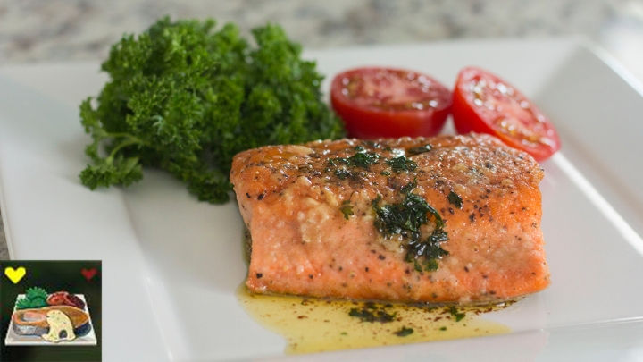

Salmon Meuniere

Description
In Breath of the Wild, Hearty Salmon is one of the best ingredients to cook with due to its effect of restoring all of Link's hearts as well as giving him a few temporary extra hearts. This recipe is featured in the shrine quest Recital at Warbler's Nest at Rito Village, unlocked only after Divine Beast Vah Medoh has been defeated. Link must collect the necessary Hearty Salmon, Tabantha Wheat, and Goat Butter to cook this dish for Genli, so that she can be persuaded to sing with her sisters.
Sheikah Plate's version of salmon meuniere is rather faithful to Link's recipe in appearance, although you can expect the steps to be slightly more complex that throwing everything into the cooking pot. If only it were that easy to cook IRL...
Ingredients
Salmon
- 2x 8 oz portions salmon
- 1-2 tablespoons kosher salt
- 1-2 teaspoons pepper
- 2 tablespoons oil
- 1 tablespoon unsalted butter
- 1/4 cup flour
Sauce
- 3/4 tablespoon lemon juice (juice from half a small lemon)
- 5 tablespoons unsalted butter
- 2-3 tablespoons chopped parsley
- 1 large garlic clove, smashed
Steps
- Warm the salmon to room temperature.
- Using the blade of your knife pull the leaves off the parsley by gently but firmly running the blade along the stems. Roughly chop into small pieces.
- Cut the lemon and juice one half, making sure not to get any seeds in the juice.
- Using the flat of a knife blade smash the garlic and remove the skin.
- Pat the salmon dry and season with kosher salt and pepper.
- Heat a pan over medium with the oil.
- When the oil is hot add the butter. Be careful, as this will splatter and pop until all the water is cooked out of the butter.
- When the butter mixture starts to calm down add the flour to a plate and dredge the salmon by patting it into the flour. Immediately add the salmon to the pan, skin down, by laying it away from you.
- Cook the salmon for 3-4 minutes, turn, and cook for another 3 minutes.
- Remove the salmon and cover with foil.
- Acting quickly pour the remaining oil mixture out of the pan and wipe out with paper towels. Be careful not to burn yourself and use proper heat proof equipment.
- Add the 5 tablespoons of butter and garlic to the pan and allow to melt and brown, about 2-3 minutes.
- Remove the pan from the heat and add the lemon and parsley. Again, use caution when you add the lemon because it may splatter and pop.
- Immediately pour over the salmon filets and serve.